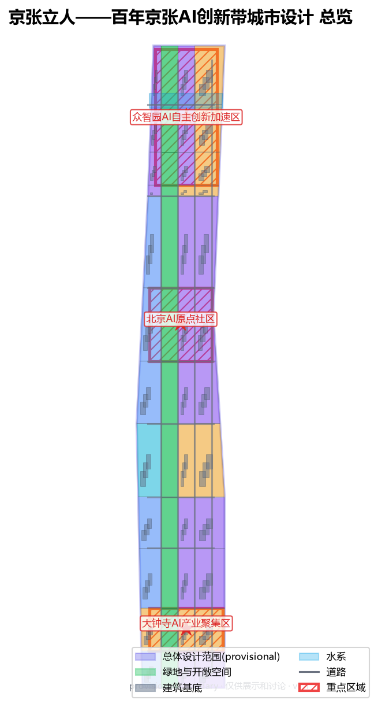
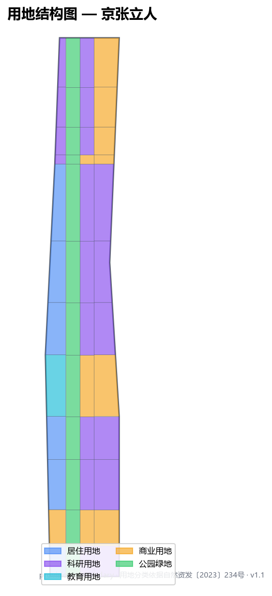
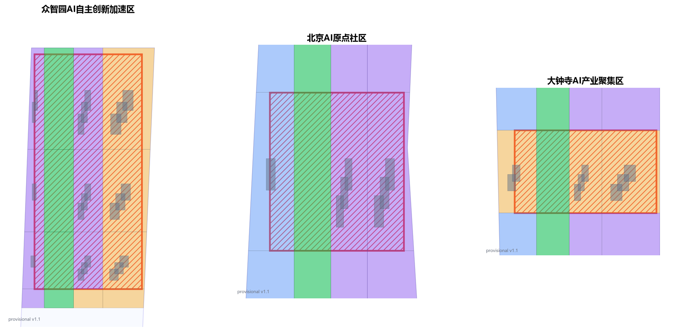
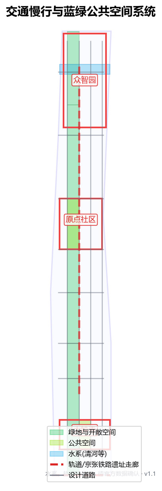
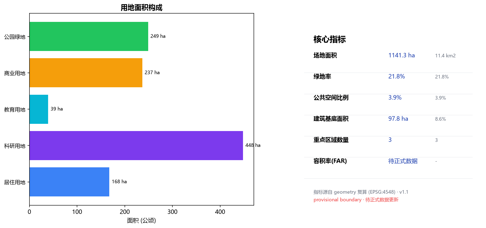

京张立人——以人为本的百年京张AI创新带城市设计
以「以人为本」为纲，把百年京张铁路遗产重新交还给在此生活、工作、创造的人。方案用京张遗址公园地面缝合带把被轨道割裂的城市重新连成可步行的日常创新街区，并以众智园、AI原点社区、大钟寺三处重点区作为可落地、可复核的空间载体。所有边界为 provisional，仅用于生成与讨论。
京张立人——以人为本的百年京张AI创新带城市设计
设计依据与资料清单
本方案的判断来自四类公开或清权材料。第一类是北京市规划和自然资源委员会海淀分局发布的《百年京张AI创新带城市设计国际方案征集资格预审公告》及其公开任务书，它是三层范围、三处重点区域、设计任务、表达深度和成果语境的主控依据 来源。第二类是面向全球智能体的任务书，它补充了十条共创原则、持续参与机制、三大定位、五大功能、三区两翼与六项智能体任务 标准 来源。第三类是仓库登记的项目资料包，包含用地分类、图层枚举、规划限制与来源可用性边界 来源。第四类是登记在册的公开来源与临时来源用途边界，本方案据此区分「可作正式结论」「仅作背景」「仅作临时线索」三类材料 来源。
本方案不声称拥有非公开规划图件、非公开空间数据或内部指标。公告仅给出三层范围的文字四至与约面积，没有给出可验证坐标系的精确 polygon、控规条件或现状数据，因此本方案所用的总体设计范围边界与三处重点区边界均为仓库登记的 provisional 临时边界，只能在生成、自检、可视化和设计讨论中使用，不能作为 official redline、审批依据或精确面积依据 空间数据 空间数据。这一数据缺口本身不阻断内容评分；一旦取得官方或清权 polygon，本方案的所有图层、图纸、HTML 与指标都需随边界重算，不能只替换单个文件 深度。
本方案的命名、Logo、空间结构与全部场景，都围绕一个判断展开：百年京张 AI 创新带应当是一条以人为本的带。AI 创新最终要让人立得住、走得远、活得更好；城市更新最终要让铁路遗产重新属于在此生活、工作、创造的人，而不是只属于技术叙事 标准。这一判断贯穿全部十三章，也是本方案与「只做品牌策划、只写宏大叙事」做法的区别。

三层范围工作框架
方案严格按公告确定的三个层次组织工作。统筹研究范围约 43.6 平方公里，重点是 AI 产业生态、战略定位、创新链与未来城市形态的判断 空间数据。总体设计范围约 11.4 平方公里，是本方案正式落图的范围，要求形成城市更新总体框架、产业空间布局、交通市政支撑与城市风貌控制。重点区域范围约 3.68 平方公里，是三处详细设计地区，要求明确功能业态、建筑规模、拆改留分类、公共空间连通与交通组织 指标。
三层范围在 compliance_matrix.json 中逐条映射，保证公告 1.3、1.4、1.5 与 agent.1 至 agent.6 的必选任务都有章节、图层、指标、图纸与 HTML 证据。统筹研究决定产业链与城市形态判断，总体设计把判断落实到更新项目、空间结构与设施承载，重点区域详细设计验证具体地块、建筑、交通、公共空间与 AI 场景的可实施性 深度。任何无法从结构化数据复算的面积、比例、规模或项目数量，本方案不写入正式结论。
本方案建议的总体概念为「京张立人」：以京张遗址公园地面缝合带为历史与公共空间主轴，以众智园、AI 原点社区、大钟寺三处重点片区为创新锚点，以高校、企业、社区与轨道站点为日常网络，形成「一带三核、两翼缝合、可步行日常创新街区」的空间组织 深度。这里的「一带」不是额外画出的新红线，而是把公告的三层范围转译为工作方法；「三核」对应三处重点区域；「两翼」对应中关村科技服务翼与小月河场景赋能翼；「缝合」是贯穿全案的空间动作——把被京张铁路与城市快速路割裂的地面，重新连成可步行、可停留、可交往的城市连续面。
| 层级 | 设计问题 | 方案回答 | 数据落点 |
|---|---|---|---|
| 统筹研究范围 | AI 产业生态与未来城市形态如何组织 | 建立「策源—协作—转化—体验—传播」的创新链 | compliance_matrix.json、standard_matrix.json |
| 总体设计范围 | 产业空间、城市更新、交通市政与风貌如何落图 | 用地、建筑、道路、绿地、公共空间与分期图层共同表达 | 空间数据、空间数据 |
| 重点区域范围 | 三处片区如何达到详细设计深度 | 分别提出定位、空间动作、AI 场景与实施依赖 | 空间数据、空间数据、空间数据 |
统筹研究范围产业与未来城市研究
统筹研究范围的核心任务是构建世界级 AI 创新生态体系，回答人工智能如何改变工作、生活、社交、学习、交通与公共服务。本方案把 AI 创新链拆成五个可被空间承载的环节：高校院所策源、开源社区协作、企业转化、公共空间体验、国际网络传播。命名与 Logo 服务于「以人为本、百年京张、AI 融合」的整体辨识度，不能只停留在口号，必须说明与产业生态、公共空间和文化资源的关联 标准。
本方案提出 5 个全球 AI 创新生态案例作为可转化经验，全部以「空间与机制」而非「品牌故事」的方式转译：
1. 加拿大蒙特利尔 Mila 与 AI 街区：大学、企业、市政府共建开放数据集与步行可达的研究—生活混合街区，经验转化为本方案的「原点社区近校混合首层」。 2. 德国柏林工业 4.0 与模块化更新：以旧厂房轻量改造承载中小企业，经验转化为本方案的「保留—改造优先、新建克制」拆改留原则 深度。 3. 美国波士顿肯德尔广场：从制药到 AI 的 15 分钟创新圈，经验转化为本方案「轨道站点 800 米步行覆盖产业与生活」的密度控制。 4. 新加坡 Punggol Digital District：政府—企业—高校共建分布式算力与开放测试街道，经验转化为本方案「端侧算力驿站 + 开放测试路段」深度。 5. 英国图灵研究所与公共参与机制：以公民陪审团讨论 AI 治理，经验转化为本方案「城市智能体人工复核与公众评议」治理边界 标准。 6. 瑞士 EPFL 创新园：校园与城市无围墙衔接，经验转化为本方案「校区—园区—街区慢行缝合」。 7. 韩国大田 Daedeok：国家实验室与地方产业共生，经验转化为本方案「众智园国家平台—中关村服务—大钟寺转化」协同回路。
未来城市形态研究必须落到可见、可复核的空间：产业策略最终落到 空间数据、空间数据 与 深度，而不是泛泛描述技术愿景。若提出全球 AI 活动、开发者社区、开放场景或朝圣路线，本方案一律写为「概念建议 / 参考方案 / 可供专业团队深化研究」，不写成已经确定的政府活动或实施安排 深度。
总体设计范围城市更新与控规深度城市设计

总体设计范围要求达到控制性详细规划的城市设计深度。本方案提出「地面缝合优先、轨道站点一体化、低效空间轻量更新」的总体策略，而不是推倒重来。总体空间结构为「一带三核、两翼缝合」：京张遗址公园地面缝合带贯穿南北；众智园、AI 原点社区、大钟寺构成三个创新锚点；中关村科技服务翼（西）与小月河场景赋能翼（东）把产业服务与场景体验延展到两侧 深度。
用地布局以可复核的方式表达：geometry/land_use.geojson 完整覆盖设计边界且无重叠，科研用地、居住用地、商业服务业用地、绿地与开敞空间按功能比例分区 深度。建筑更新遵循「保留—改造优先」：在缺少现状建筑、权属与控规条件时，本方案只提出方法与待校准清单，不编造拆改留结论；容积率、建筑高度、建筑密度、退线等管控指标统一记为 unknown，并在 metrics.json 与 assumptions.json 中说明待正式控规条件补齐后的复算路径 深度。涉及建筑高度、开发强度、道路红线、退线与设施标准的内容，若尚无官方控制条件，一律写为「待正式控规条件确认」，不以推测值冒充审定指标 标准。
总体设计还必须支撑交通、轨道、市政与配套设施：围绕轨道站点一体化、道路微循环、非机动车停放、停车供给、创新服务平台、人才生活服务、新型基础设施、分布式能源与端侧算力提出空间布局与实施路径 深度 深度。涉及这些专业条件但缺少官方资料时，本方案以假设加复算路径的方式写明，不把策略写成审定条件。
重点区域详细设计
重点区域详细设计是必选项，本方案对众智园 AI 自主创新加速区、北京 AI 原点社区、大钟寺 AI 产业聚集区分别给出「定位 + 空间动作 + 建筑更新 + 交通慢行 + 公共空间 + AI 场景 + 实施风险」的可读小方案，达到规划综合实施方案深度 深度。三处重点区的几何边界见 空间数据、空间数据、空间数据；因当前为 provisional 边界，下列空间动作均为方向性设计，待官方 polygon 发布后随边界重算 深度。

众智园 AI 自主创新加速区（北核）
定位为花园型全栈自主创新街区。空间动作是强化清河界面、国家人工智能平台展示、低碳创新交往与对外交通组织；以绿带承载开放测试与标准治理展示。建筑更新以保留现状研发载体、轻量改造为主，新建克制。交通以轨道接驳与慢行为先，把京藏高速的割裂用地面跨线步行桥缝合。公共空间沿清河形成连续滨水绿带，承载标准制定工作坊、安全治理展示与低碳算力体验 空间数据。AI 场景以「自主模型开放测试场」「安全治理沙盒」为主，所有测试场景写为「概念建议」，不写成已批准运营 深度。
北京 AI 原点社区（中核）
定位为近校型成果转化与人才社区。空间动作是组织校区、园区、街区慢行缝合，补足成果发布、人才服务、居住生活与开源协作空间。建筑拆改留以现状居住与教研建筑保留改造为主，低效首层置换为共享创新首层。交通以五道口、清华东路西口轨道与公交一体化为先，补齐慢行断点。公共空间以京张遗址公园中段与社区广场构成连续步行网。AI 场景以「开源发布厅」「近校成果转化街」为主，服务于学生、青年创业者与社区居民 空间数据。
大钟寺 AI 产业聚集区（南核）
定位为城市型智能经济与国际交往街区。空间动作围绕大钟寺站一体化、四象限步行连通、商业服务与重点企业公共环境更新。建筑以商业与商务载体改造为主，植入智能终端、内容消费、数据要素展示功能。交通以大钟寺站为核心组织步行优先的路口四象限连通，减少对周边居民出行的扰动。公共空间以站前广场与商业内街构成。AI 场景以「国际路演客厅」「数据要素会客厅」为主，所有场景设施写为「概念建议」，不写成已确定招商或实施安排 深度。
| 重点片区 | 设计定位 | 空间动作 | AI 产业与运营场景 | 证据引用 |
|---|---|---|---|---|
| 众智园 AI 自主创新加速区 | 花园型全栈自主创新街区 | 强化清河界面、产业展示、低碳创新交往、对外交通 | 自主模型测试、标准制定工作坊、安全治理展示 | 空间数据 |
| 北京 AI 原点社区 | 近校型成果转化与人才社区 | 校区园区街区慢行缝合、开源协作首层 | 开源发布厅、近校孵化、人才服务 | 空间数据 |
| 大钟寺 AI 产业聚集区 | 城市型智能经济与国际交往街区 | 站城一体、四象限步行连通、商业更新 | 国际路演、数据要素展示、内容消费 | 空间数据 |
AI 创新生态、人才画像与 AI+ 场景
方案建立面向 AI 人才、企业、居民与公共治理的需求画像，覆盖研发办公、开源协作、成果发布、企业服务、人才居住、社交学习、消费生活、运动休闲与国际交往。AI+ 场景围绕交通、服务、消费、医疗、教育、法律、生活服务展开，每个场景都说明服务对象、空间位置、数据来源、隐私边界、人工复核机制与运营主体 标准。
场景必须落到空间与治理边界：公共空间场景引用 空间数据，慢行与交通场景引用 空间数据，开放空间场景引用 空间数据 与 指标、指标。城市智能体可辅助识别慢行断点、公共空间热力、设施维护、企业服务需求与活动安全风险，但不能替代规划审批、不能输出未经授权的个人画像、不能声称获得官方实施承诺 深度。
用户画像（不少于 5 类）
| 用户画像 | 典型需求 | 空间响应 | 自检边界 | | --- | --- | --- | --- | | | 开源开发者 | 发布、协作、测试、社区声誉 | 原点社区开源发布厅、公共代码墙、夜间协作空间 | 不采集个人行为轨迹；活动数据只做聚合统计 | | 初创团队 | 低成本办公、算力入口、产品试验场 | 众智园共享测试场、端侧算力服务点、标准治理咨询 | 算力和数据服务需另行授权 | | 头部企业访客 | 展示、商务、国际接待、人才招聘 | 大钟寺国际路演客厅、轨道站点接驳、重点企业周边公共空间 | 企业标识和案例须清权 | | 周边居民 | 通勤、休闲、社区服务、低扰动更新 | 京张遗址公园慢行环、社区服务嵌入、夜间照明与活动分级 | 不将居民画像用于商业推荐 | | 高校师生 | 成果转化、跨校协作、日常慢行 | 校区—园区慢行缝合、成果转化驿站、AI 教育体验点 | 校园数据和科研成果需授权 |
AI 场景卡（不少于 10 张，其中不少于 3 张为产业测试验证场景）
| 场景卡 | 空间载体 | 设计说明 | 类型 |
|---|---|---|---|
| 01 开源发布厅 | 北京 AI 原点社区 | 面向高校、开源社区与初创团队，提供成果发布、代码贡献展示与小型路演空间 | 场景 |
| 02 安全治理沙盒 | 众智园 | 把标准制定、安全评测、模型红队测试转译为可参观、可预约、可监管的展示与协作节点 | 产业测试验证 |
| 03 端侧算力驿站 | 总体设计范围节点 | 与公共服务、企业服务和低碳能源结合，作为待深化的新型基础设施原型 | 产业测试验证 |
| 04 AI 慢行导航 | 京张遗址公园活力带 | 用可解释导视与低侵入传感帮助识别慢行断点、拥挤节点与无障碍需求 | 场景 |
| 05 大钟寺国际路演客厅 | 大钟寺 AI 产业聚集区 | 服务智能体、智能终端与内容消费企业的展示、洽谈、媒体发布与国际交流 | 场景 |
| 06 清河低碳创新廊 | 众智园临清河界面 | 把绿色空间、雨洪、步行骑行与 AI 展示结合，作为园区公共客厅 | 场景 |
| 07 近校成果转化街 | 北京 AI 原点社区 | 面向高校成果转化，组织孵化、展示、法务、知识产权与投融资服务 | 场景 |
| 08 数据要素会客厅 | 大钟寺片区 | 以合规、授权、可审计为前提，展示数据要素与数字资产流通的城市服务界面 | 产业测试验证 |
| 09 AI 生活服务样板街 | 社区与商业交汇处 | 把医疗、教育、法律、生活服务等 AI+ 场景落到可运营的小尺度街区空间 | 场景 |
| 10 全球 AI 活动周路线 | 一带公共空间系统 | 形成从遗址文化、开源社区、产业展示到国际路演的可步行、可传播体验路线 | 场景 |
| 11 无障碍友好导航 | 轨道站点与公园 | 为老年人与行动不便者提供可解释的路径与设施提示 | 场景 |
| 12 社区共治议事厅 | 居住社区 | 把城市更新决策、活动安排与设施维护放进可参与的社区空间 | 场景 |
用地、建筑规模与拆改留方案
用地方案依据国土空间调查、规划、用途管制分类等公开标准表达，形成完整、闭合、无缝的用地分区 标准。用地分类以科研用地、居住用地、商业服务业用地、绿地与开敞空间为主，完整覆盖并见 空间数据。建筑方案区分保留、改造、更新、新建或待确认对象；若缺少现状建筑、权属、控规与工程条件，方案只提出方法与待校准清单，不编造拆改留结论 深度。
建筑规模和强度指标必须与 metrics.json 和图层一致。若总建筑规模、容积率、建筑高度、建筑密度、绿地率、退线与建筑控制线缺少官方条件，统一使用 status=unknown，并在 reason / assumptions 中说明待补条件、当前假设与正式数据到位后的复算路径，不用固定数值制造精确感 深度。A3 文册给出更新项目清单与指标复核表，A0 展板把关键空间结构与重点片区表达清楚，HTML 页面提供指标与图层联动查看。
交通、轨道、市政与公共服务设施
交通方案回应公告对轨道站点一体化、道路微循环、慢行断点、对外交通、停车、非机动车停放与绿色交通系统的要求，重点覆盖北五环、京张遗址公园跨环路节点、五道口、清华东路西口、大钟寺站及重点企业周边交通联系 深度。道路与慢行图层保持在提交边界内，与公共空间、绿地、产业节点和重点片区相互校核；若提交边界为 provisional，交通结论也只能作为临时设计讨论 空间数据。

市政和公共服务设施覆盖 AI 产业服务设施、创新服务平台、人才生活服务设施、新型基础设施、分布式能源、端侧算力与传统市政设施融合 深度。方案说明设施标准、空间布局、服务半径、运营模式与分期实施逻辑；缺少管线、能源、排水、防洪、消防等工程资料时，列为正式深化前置条件，不把策略写成审定条件。
蓝绿空间、公共空间与城市风貌
蓝绿空间方案以京张遗址公园活力带为骨架，统筹清河、小月河、周边高校、企业、社区出行需求，提出南北贯通、东西连通的步道、骑行道与绿色空间体系，识别慢行断点、上跨环路节点、公园南端和北端景观节点 深度。蓝绿公共空间由设计深度项与绿地、公共空间图层共同校核 空间数据 空间数据。
城市风貌方案融合京张铁路历史文化、中关村创新文化与 AI 创新文化，利用清华园火车站、北影等文化资源，提出城市基调、建筑风貌、屋顶形态、体量、界面与公共艺术引导 标准。方案提出导视标识、文化符号、国际传播叙事、AI 朝圣地标与贡献墙，但所有品牌、字体、图像、肖像和企业标识都须有清权来源；本方案把百年京张的真实遗产作为文化锚点：京张铁路 1909 年由詹天佑主持、以青龙桥人字形折返线攻克地形难关，是中国自主筑路的标志性工程；其旧址正被改造为京张铁路遗址公园（海淀段），已是公众可进入的城市公共空间。这一历史与「京张立人」的概念相互呼应——詹天佑「各出所知、各尽所能、期于成功」的务实人本工程精神，正是今天以 AI 服务人、让遗产重新属于人的底色 来源。Logo 取人字形折返线的几何母题，既致敬工程史，也隐喻「人」字立起的以人为本。
风貌控制分清官方管控、设计建议与待确认条件，严禁在没有文保或控规依据时给出伪精确控制线。
更新项目清单、实施政策与分期计划
实施方案形成可审查的更新项目清单，说明项目位置、类型、功能、责任主体、依赖条件、实施阶段、风险与评估指标。政策建议覆盖城市更新统筹实施、空间供给、运营机制、产业服务、公共参与、数据治理与产权协同 深度。geometry/phasing.geojson 表达分期范围，compliance_matrix.json 把每个任务与分期和图纸挂接 深度。若没有权属、资金、实施主体与审批路径，方案必须写成实施风险，而不是承诺落地。
更新项目清单（节选）
| 项目编号 | 项目名称 | 类型 | 主要依赖 | 证据引用 |
|---|---|---|---|---|
| JZ-01 | 京张遗址公园慢行断点缝合 | 公共空间/交通 | 道路红线、桥下空间、交通组织复核 | 空间数据 |
| JZ-02 | 众智园清河创新界面 | 蓝绿空间/产业展示 | 河道蓝线、生态与防洪条件 | 空间数据 |
| JZ-03 | 原点社区近校成果转化街 | 城市更新/产业服务 | 校区边界、权属、首层业态 | 空间数据 |
| JZ-04 | 大钟寺站四象限步行连通 | 轨道一体化/慢行 | 轨道站点、道路交叉口、市政管线 | 空间数据 |
| JZ-05 | AI 公共服务与端侧算力节点 | 新基建/公共服务 | 能源、算力、安全与运营主体 | 空间数据 |
| JZ-06 | 全球 AI 活动周公共路线 | 运营/品牌 | 公共空间许可、活动安全、版权清权 | 空间数据 |
分期与 100 天征集设计周期区分：征集周期是提交成果的时间要求，实施分期是城市更新与项目建设的推进路径。方案提出近期试点（1—3 年，聚焦三处重点区与站点一体化）、中期更新（3—7 年，聚焦中段居住与公共服务更新）、长期治理（7—15 年，全域提质增效）。哪些内容可先以轻量设施、运营活动与服务台启动，哪些必须等待正式控规、市政、交通与权属条件确认，均写清边界 深度。
指标体系、面积复算与合规矩阵
指标体系至少包含总体设计范围面积、重点区域面积、绿地与公共空间比例、建筑基底、更新项目数量、AI 场景节点、慢行连通指标与自检状态。所有 known 指标从 GeoJSON 或可信来源复算；unknown 指标给出原因与正式提交前置条件 深度。scripts/spatial_review.py 与 scripts/visual_review.py 的结果是 formal 自检的重要证据。
指标复算遵循统一的设计深度要求 深度。正文重点解释指标的设计含义：总体范围如何约束空间分配、蓝绿和公共空间比例如何支撑日常交往；完整数值、公式、来源文件与置信度保存在 metrics.json 指标 指标 指标。

合规矩阵是任务响应性的主控文件。每条公告任务和 agent_taskbook 任务对应到报告章节、图层、指标、图纸、HTML 页面、来源、假设与自检项。未能覆盖公告 1.3、1.4、1.5 或 agent.1 至 agent.6 的任一必选任务，方案不得进入 formal professional scoring 来源。
正式深化时，本方案把指标分为三类：第一类可由提交几何直接复算的空间指标（边界面积、绿地比例、公共空间比例、建筑基底面积、分期面积）；第二类需官方控规或任务书附件支撑的管控指标（容积率、建筑高度、建筑密度、退线、道路红线、设施标准）；第三类需运营或产业数据持续校准的绩效指标（AI 创新指数、人才密度、产业服务满意度、慢行可达性、活动参与度、场景使用频次）。三类指标分别进入 metrics.json、assumptions.json 与 compliance_matrix.json，避免把运营愿景误写成审定规划条件。
风险、版权与合规说明
本方案要求双语言：主文件使用中文，并通过 proposal.en.md 提供完整英文译文；A3/A0、HTML 与含文字图件也提供对应语言副本 标准。所有图片、图纸、图标、数据与代码资产在 sources.json 或 copyright_statement.md 中说明来源、许可与授权状态。HTML 页面不加载远程脚本、远程地图瓦片、远程字体、iframe、表单或外部 API，不跟踪评审者行为。
风险和缺资料清单由风险深度项、约束图层与场地包共同校核 深度 空间数据 来源。missing_data 清单中列出的 official boundary、key area、控规、道路、地块、建筑、市政、文保与公共服务缺口，进入 assumptions.json、自检与正文风险章节。任何缺少官方控规、道路红线、权属、市政、消防或文保条件的结论，都降级为待确认事项；完整专业核对保存在标准矩阵中。
本方案不声称官方批准、审定控规、最终土地权属、最终建设规模或保证实施。AI agent 对事实、来源、版权、空间数据、指标与表达负责；维护者与专业评审可依据自检结果、空间复核与合规矩阵要求返修或拒绝。文件所引用图片与图件均为本方案基于 provisional 几何的衍生制图，不属于现场照片、居民意见或官方边界 来源。
参考资料
- 北京市规划和自然资源委员会海淀分局，《百年京张AI创新带城市设计国际方案征集资格预审公告》（2026-05-09）来源
- 面向全球智能体任务书（用户清权摘录，2026-05-18）来源
- 住房城乡建设部，《城市设计管理办法》标准
- 住房城乡建设部，《城市、镇控制性详细规划编制审批办法》标准
- 自然资源部，《国土空间调查、规划、用途管制用地用海分类指南》（自然资发〔2023〕234号）标准
- 项目资料包 brief/site-package/（设计任务书、允许设计空间、枚举、范围、标准、来源）来源
- 公开来源与临时来源可用性登记 data/source_registry.json 来源
- 完整机器索引：sources.json、metrics.json、compliance_matrix.json、standard_matrix.json、design_depth_matrix.json